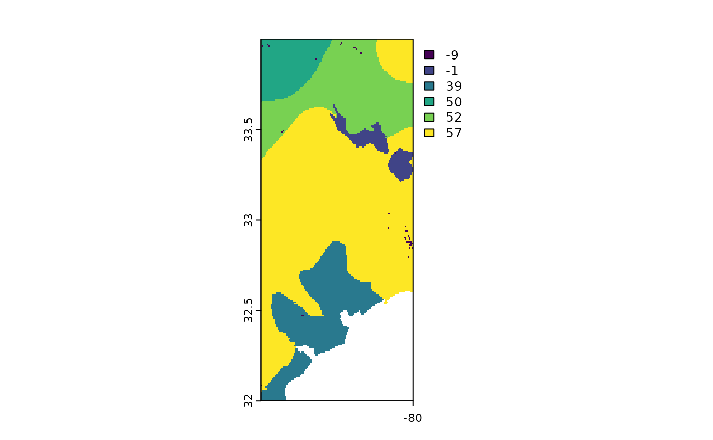
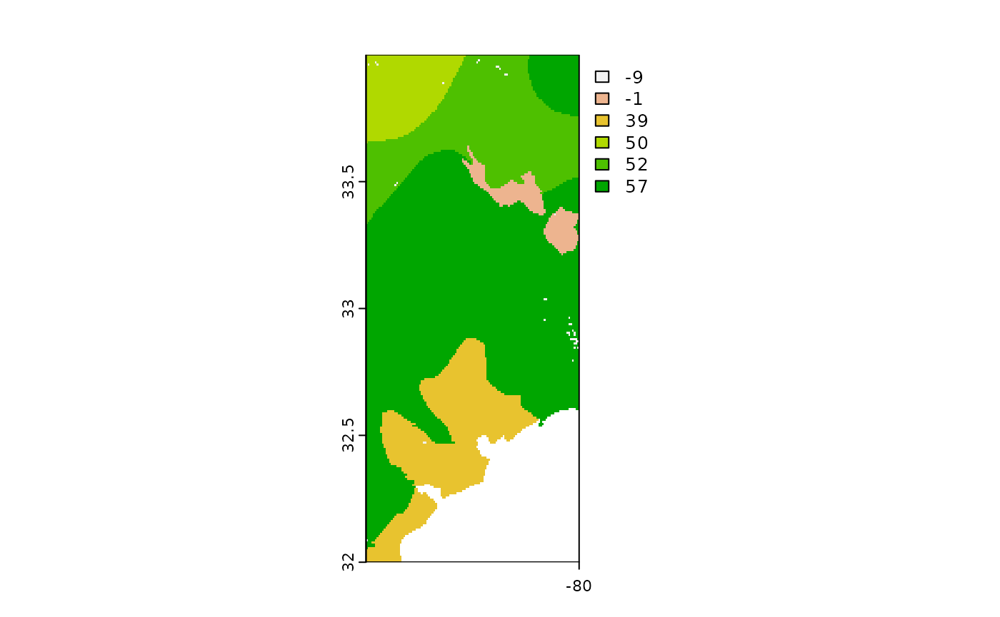

hwsdr v2.0 functionality
Koen Hufkens
2023-08-07
Source:vignettes/hwsdr-v2-vignette.Rmd
hwsdr-v2-vignette.RmdAlthough the package provides support for the programmatic interface to the Harmonized World Soil Database ‘HWSD’ web services (https://daac.ornl.gov/cgi-bin/dsviewer.pl?ds_id=1247), a newer HWSD v2.0 version of the database has been released by the Food and Agriculture Organization (FAO). However, this version is not yet available on the ORNL DAAC. In the mean time, I provide point and region based extraction of data through the package with minimal manual downloads or data manipulations. In short, aside from the downloading of a single map (indices) the process largely remains similar to the use of the ORNL DAAC API.
Use
Download the base map
The HWSD v2.0 data is distributed as a spatial map where homogeneous
regions are indicated with indices (integers). Although the underlying
database is included in the package and can be accessed using
hwsdr::hwsd2, the spatial data accompanying the database is
too large for inclusion in the package. This spatial data needs to be
downloaded explicitly.
Ideally, to speed up processing between sessions you download the
data to a fixed location (directory) on your computer. The function
ws_download() will download the data there. If successful
the function will return the path where the data is located.
# set the ws_path variable using a FULL path name
path <- ws_download(
ws_path = "/your/full/path",
verbose = TRUE
)To create persistence of the data between sessions, you can set the
~.Renviron file to contain a WS_PATH variable pointing to
the directory where you downloaded the data. This environmental variable
will then be read at startup and will be the default file location when
using the hwsdr package for v2.0 data.
To set the .Renviron file you can use the usethis
package and the usethis::edit_r_environ() function, which
will create the file and open it in RStudio for you to edit.
usethis::edit_r_environ()In the editor window you can then write:
WS_PATH = "/your/full/path"A restart of the R(Studio) session is required for this to be
considered in further processing. After this you can call the path by
using Sys.getenv("WS_PATH") and passing the value to the
ws_path parameter in ws_subset().
Al;ternatively you set it manually, and keep track of the gridded file
location yourself in all your scripts.
Single pixel location download
Get world soil values for a single site using the following format, specifying coordinates as a pair of longitude, latitude coordinates (longitude, latitude). Here the call only extracts the top soil (layer = “D1”) fraction of sand and silt (% weight) for one specific location. Note that unlike HWSD v1.2 as available through the ORNL DAAC API the new version of the database has seven layers (D1 - D7) instead of just a top soil and sub-soil layer.
values <- ws_subset(
site = "HWSD_V2",
location = c(-81, 34),
param = c("SAND","SILT"),
layer = "D1",
version = "2.0",
ws_path = "/your/full/path"
)At this location we have a top soil fraction of sand of 78% weight and a silt fraction of 12 % weight! Data are returned as tidy data frames including basic meta-data of the query for later subsetting.
print(values)
#> # A tibble: 2 × 5
#> value latitude longitude site parameter
#> <dbl> <dbl> <dbl> <chr> <chr>
#> 1 50 34 -81 HWSD SAND
#> 2 24 34 -81 HWSD SILTGridded data
You can grab gridded data by specifying a bounding box c(lon, lat, lon, lat) defined by a bottom left and top right coordinates. Here the call only extracts the top soil (D1 layer) fraction of sand (%).
sand <- ws_subset(
location = c(-81, 32, -80, 34),
param = "SAND",
layer = "D1",
version = "2.0",
ws_path = Sys.getenv("WS_PATH"),
# ws_path = "/your/full/path",
internal = TRUE
)
terra::plot(sand)
Alternatively you can use sf bounding box
(st_bbox()) function output to define an extent over which
you want to extract gridded data. The structure of the function also
allows for pipes to be used.
a <- sf::st_sf(a = 1:2,
geom = sf::st_sfc(
sf::st_point(c(34, -81)),
sf::st_point(c(32, -80))),
crs = 4326)
t_sand <- a %>%
sf::st_bbox() %>%
ws_subset(
version = "2.0",
param = "SAND",
layer = "D1",
ws_path = Sys.getenv("WS_PATH")
)This call gives an equivalent dataset as above, as shown in the plot.
terra::plot(sand)